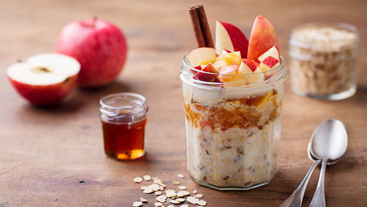

Overnight Oats

Ingredients
- 1/2 cup oats
- 1/4 cup Greek Yogurt
- A splash of milk
- Blueberries
- 1 tbsp Chia seeds
Steps
- Place the oats and chia seeds in a container
- Add the yogurt and mix well
- Add a splash of milk if you feel the consistency is too thick
- Mix well
- Leave in refrigerator overnight
- Serve with blueberries or any fruit of your choice